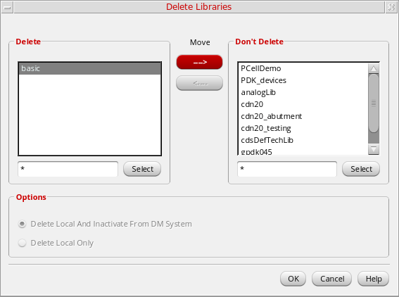

Selecting and Moving Data in the Library Manager
The following tasks cover ways you can use the Library Manager forms and list boxes to manipulate data.
Selecting Items in Library Manager
To select items in Library Manager:
-
Click the item name to select a library, category, cell, view, or file on the Library Manager form whether in List mode or in Tree mode.
- Right-click the item name to select a library, category, cell, view, or file and display a pop-up menu.
- If you are in View – Lists mode, you can select a specific item not visible in the list box by typing the name in the active field at the top of the list box.
Deselecting Items in Library Manager List Boxes
To deselect an item, click the item name.
- If you deselect a cell, any selected view is also deselected.
- If you deselect a category, any selected cell and view are also deselected.
- If you deselect a library, any selected item in that library is also deselected.
Moving Data in List Boxes
Some forms, such as Delete forms and Category forms, use “Do” and “Don’t Do” list boxes. You can move data from one list box to the other to specify a group of items affected by the action.

To move items from one list box to the other:
-
Select the item or items you want to move.
You can select multiple items byShift-clicking,Control-clicking, clicking and dragging, or using filters. -
Click the arrow that points in the direction you want to move the items.
The items move from one list box to the other.
Related Topics
Controlling the Display of Library Information
Return to top